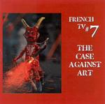

| Artist: | French TV |
| Title: | The Case Against Art |
| Label: | Pretentious Dinosaur Records CD006 |
| Length(s): | 54 minutes |
| Year(s) of release: | 2001 |
| Month of review: | [08/2002] |
| 1) | That Thing On The Wall | 8.53 |
| 2) | Viable Tissue Matter | 11.45 |
| 3) | Partly The State | 10.30 |
| 4) | One Humiliating Thing After Another | 9.18 |
| 5) | Under The Big 'W' | 14.18 |
On Viable Tissue Matter, the music takes on a more mellow guise. Here the flute is dominant at first, and very melodically so. The song exudes a very laid back jazz feel. Warbly synths follow, holding on to the same mood. Shrill sax and a bouncy rtythm take over then, giving the song a primordial feel. Then the pace goes up and the bass is allowed to solo, with a rhythm guitar filling in the holes in the back. The rhythm guitar then takes over the fore as well in dissonant fashion. The pace goes up and up, the band going for a climax.
Partly The State has militaristic and technocratic aspects, so one might say that fits in well with the title. The next passage is a vocal one, to my surprise, with strumming guitars and a strongly percussive feel and some flute joining in. The music now has a very warm vibe and the music has taken on a Happy The Man and Gentle Giant with seventies vocal harmonies. Then we come to a moody interlude with a hesitant flute and tinkling keyboards. The bass gives the signal for the music to fire up again, here I am tempted to think of Yes with for their typical guitar sound, piano runs and chanting vocals. Yes, overtly complex and varied, Yes is not far off here.
One Humiliating Thing After Another is a bit of a fragmentary one with the RIO/Canterbury influences shining through big times again. All kinds of musics are included here, and not all of them in their separate passage even. This makes for a rather chaotic and dense tune for the first three and a half minute. Temperament is also high in this track, with a certain Spanish and sometimes French feel in the music. Notwithstanding this is symphonic jazzrock, meandering instruments, all very tuneful, all very seventies. A laid back Cuban feel gives rise to taking some gas back, the following bass, flute and piano part is even mellower. Dissonance rises high when the guitar sets in again, going against the sax.
Under The Big 'W' opens ploddingly with a woman speaking in a sexy German voice, I am not sure in what accent. Could be Russian. Whether it was meant that way remains to be seen. Accordion sounds and a waltzy bass make this a rather optimistic tune. A mellow interlude, again with accordionic sounds. The music tends to wander a bit here, in fusion style. Then the music gets active again with a frenzied Crimsonesque approach, tension building and building... After another hectic interlude, military drums take over and we are in for another groovy sleighride across runs of meandering keyboards. The horns in the closing section may remind a bit of Van Der Graaf Generator, although somewhat more mellow. The music returns to us, after a bit of silence with the French sounding pipe organ (or whatever).